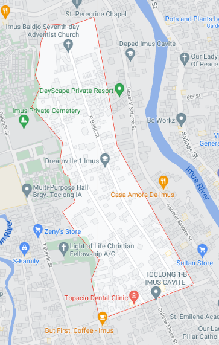

MANDATED TERITORIES
Anent to Resolution No. 54 dated July, 1990 of the Sanguniang Bayan of Imus requesting the Sanguniang Panlalaligan of Cavite to incease the number of barangays in imus from twenty-one[21] to ninety-seven[97] which was approved by the Sanguniang Panlalaligan of Cavite under Resolution No.305 dated August 16, 1990.
Under Sanguniang Bayan resolution No. 65 dated August 30, 1990 it was resolved that the bounderies of the ninety-seven[97] Barangays in Imus was arranged.

Brgy. Toclong I-B map.